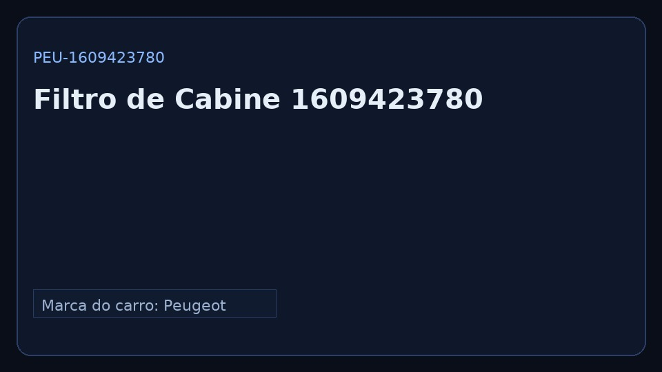

Código: PEU-1609423780
Marca do carro: Peugeot · Marca da peça: MANN-FILTER · Categoria: Climatização
Aplicação: 208/2008 · Versão do manual: 1.0
Marca do carro: Peugeot · Marca da peça: MANN-FILTER · Categoria: Climatização
Aplicação: 208/2008 · Versão do manual: 1.0
Escaneie o QR da peça
Ou digite: https://D3Z33.github.io/toqueai_mvp/p/PEU-1609423780.html
Dica: baixe o PDF para uso offline.